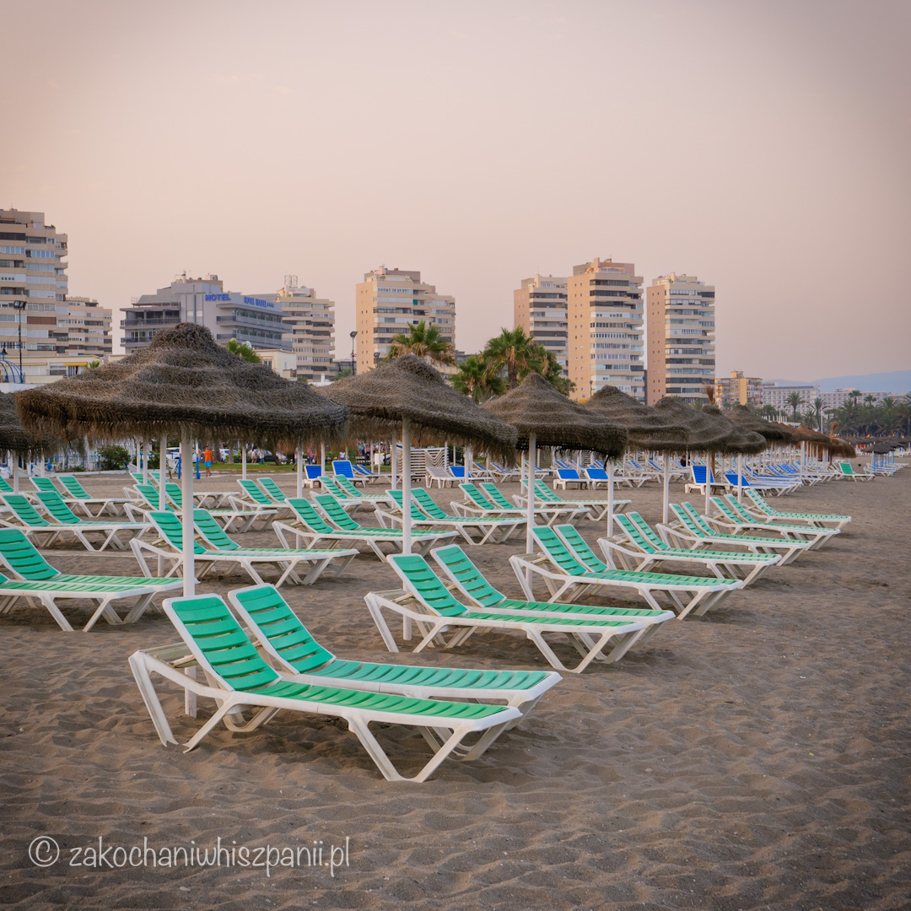
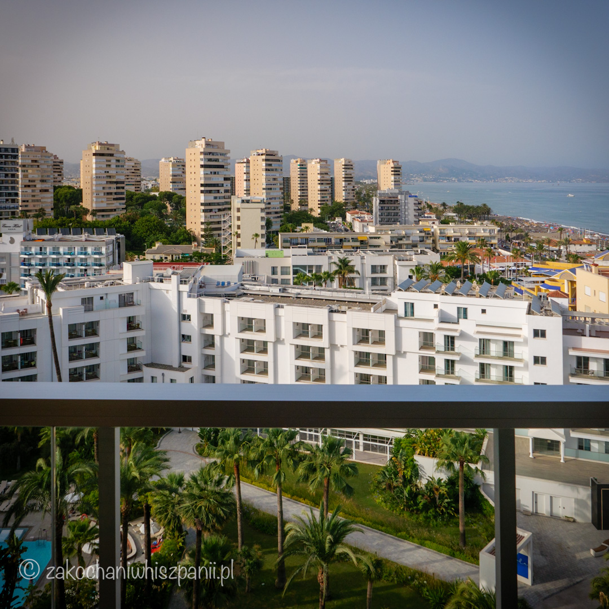
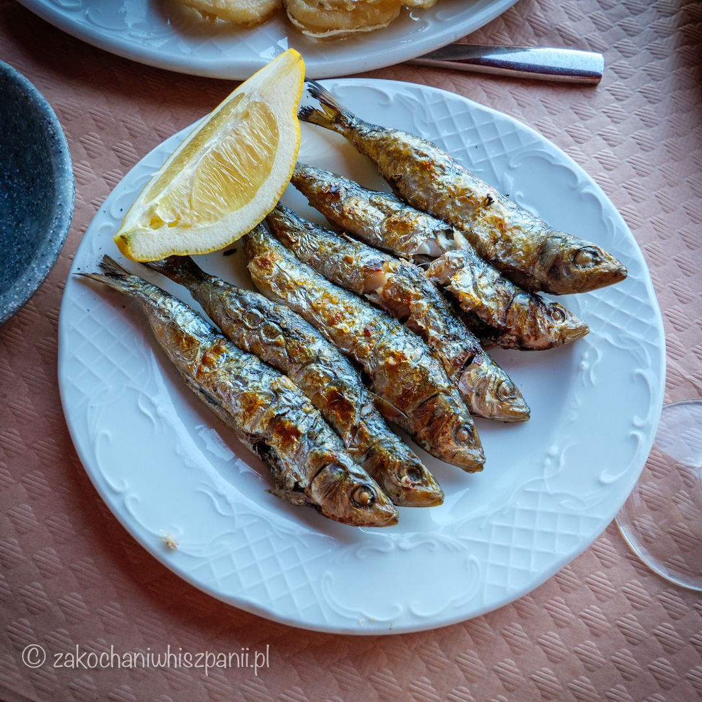
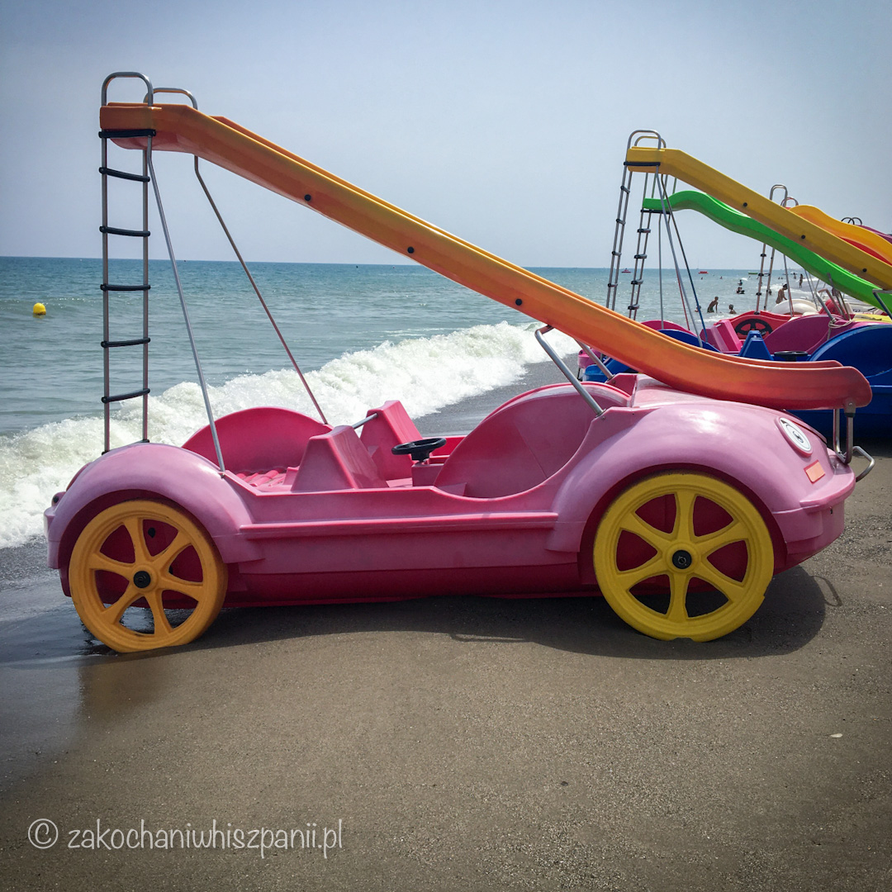
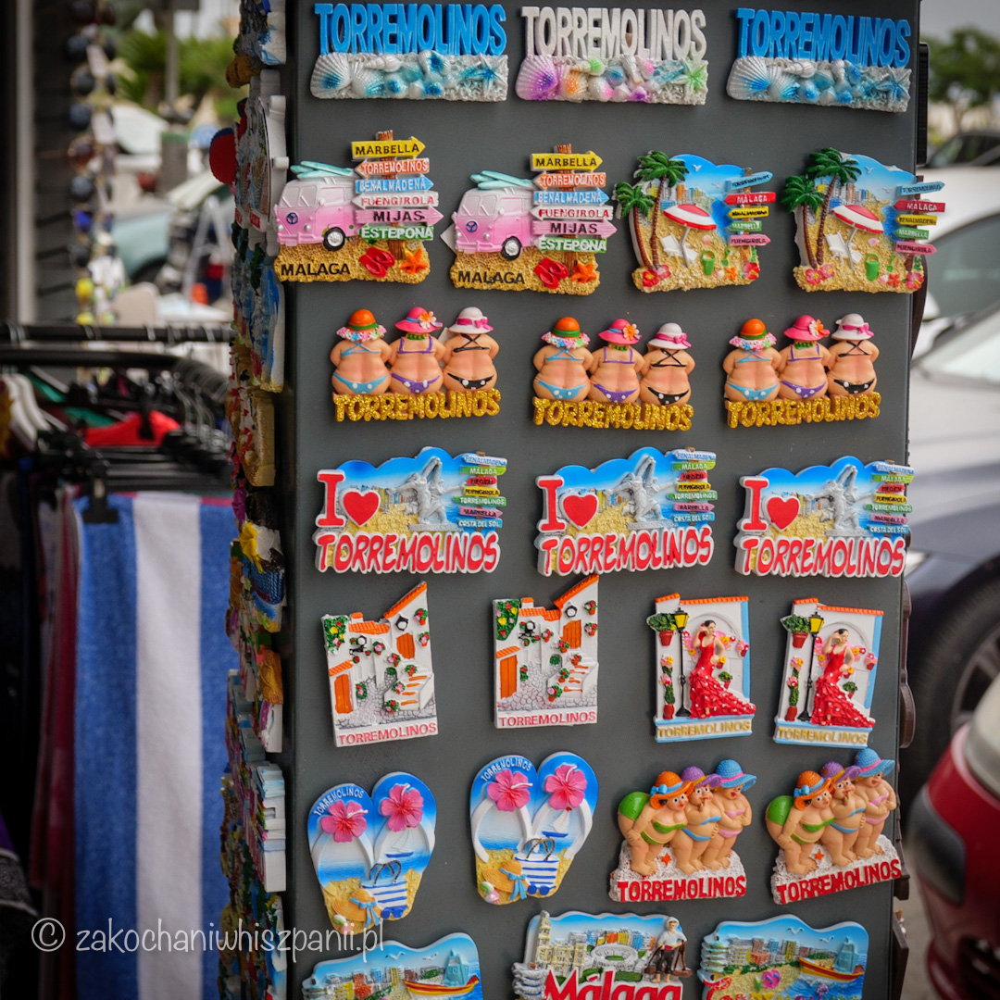
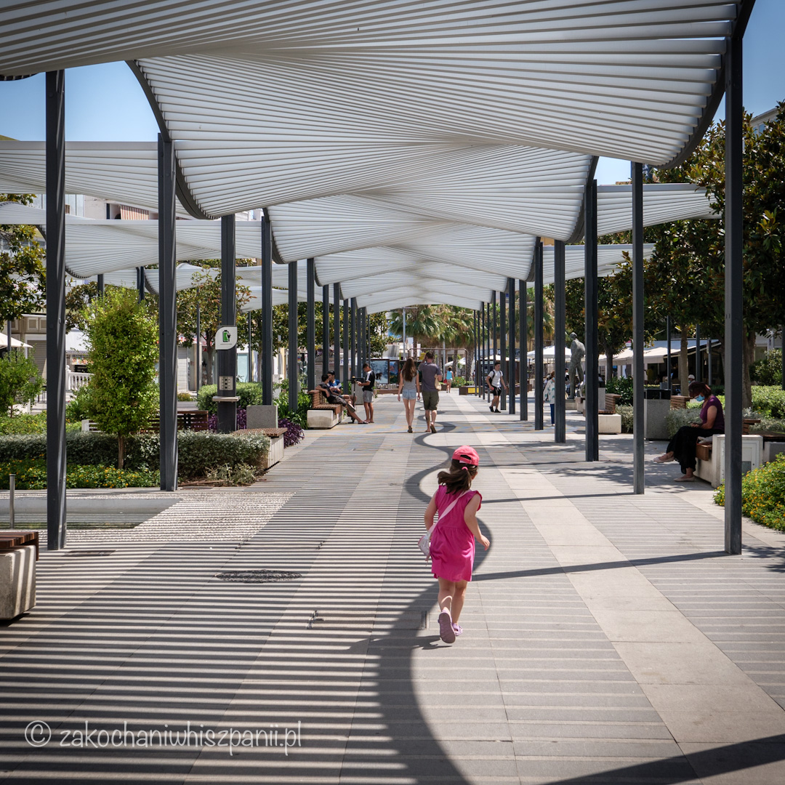
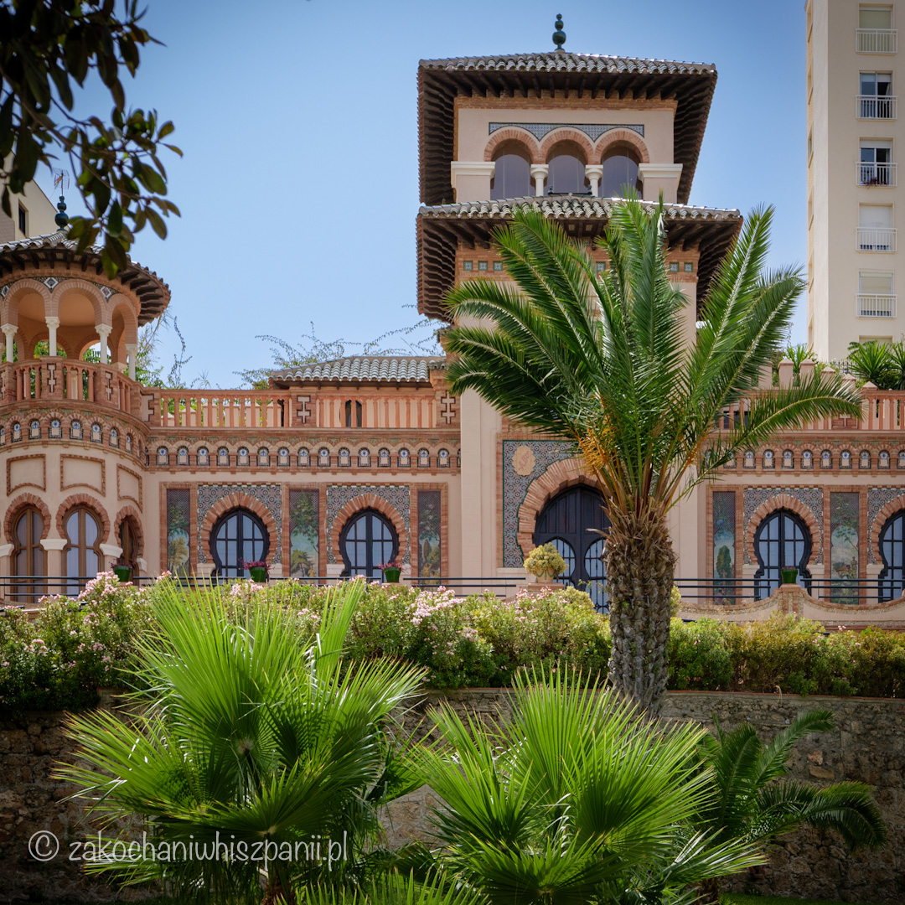
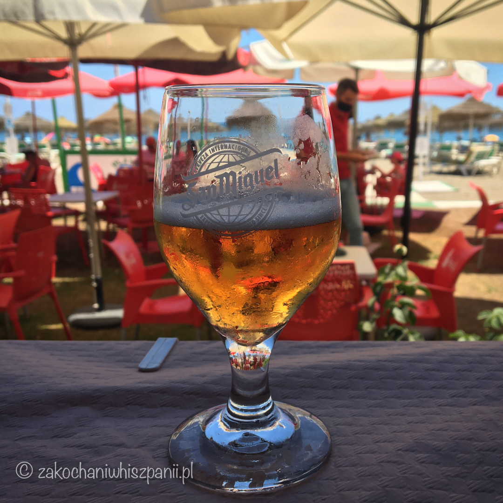
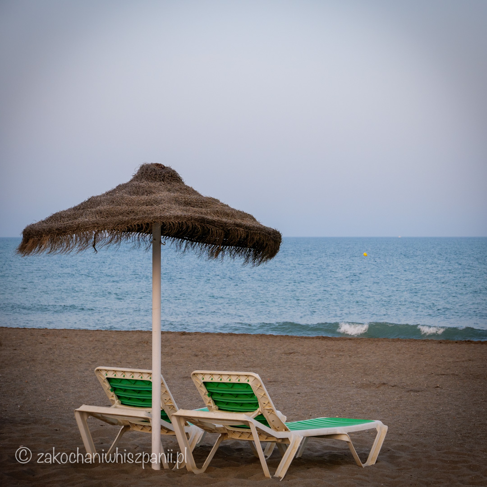

Wakacje w Torremolinos na Costa del Sol
Co robić podczas urlopu w Hiszpanii w Torremolinos?
Wybierasz się na wakacje do Torremolinos w Hiszpanii? Na własną rękę, lub z biurem podróży np. Itaka czy Tui? Chcesz dowiedzieć się więcej o Torremolinos. Przeczytaj poniższy tekst.

W której części Hiszpanii znajduje się Torremolinos?
Miejscowość Torremolinos położona jest na południu Hiszpanii, w regionie Costa del Sol. Oddalone o niecałe 10 km od lotniska w Maladze, natomiast od pobliskiej Benalmadena dzieli zaledwie 5 km. Jak cały region Costa del Sol, tak i Torremolinos jest turystyczną miejscowością. Hotele w Torremolinos znajdziesz zarówno z atrakcjami dla rodzin z dziećmi, jak również tylko dla dorosłych. Jest tu dużo restauracji i atrakcji turystycznych.

Torremolinos jest dobrą bazą wypadową na wycieczki w regionie Costa del Sol do pobliskich miejscowości: Malaga, Benalmadena, czy Fuengirola.
Jak dojechać do Torremolinos z lotniska w Maladze?
Przylatując na lotnisko w Maladze, możesz skorzystać z pociągu zatrzymującego się w okolicy terminalu nr 3. Wsiadasz w kolejkę C1 i wysiadasz na przystanku Torremolinos. Możesz skorzystać z taksówki lub wypożyczyć samochód.

Polecamy Ci wypożyczenie samochodu z Goldcar. Za każdym razem dodatkowo wykupujemy pełne ubezpieczenie samochodu, co daje nam poczucie spokoju na wakacjach. Nawet przy lekkim zarysowaniu samochodu, które nam się przytrafiło, nie było żadnych problemów.

Co koniecznie musisz zrobić/zobaczyć będąc w Torremolinos?
- Spróbuj hiszpańskiej kuchni np. paella, gazpacho. W Torremolinos posmakuj również lokalnych dań np. sardynki pieczone na ogniu (hiszp.espetos de sardinas) w jednym z barów przy plaży (hisz. chiringuito) 
- Na plaży Bajondillo wypożycz rower wodny ze zjeżdżalnią. 
- Przejdź się deptakiem (hiszp.calle) San Miguel i kup pamiątki. 
- Odwiedź dobrą restaurację w centrum miasta np. Zabor Feten
- Idź na spacer nadmorską promenadą Paseo Maritimo Torremolinos. (Uważaj na sprzedawców, którzy będą chcieli Ci sprzedać podrobione towary np. torebki, ubrania, czy okulary przeciwsłoneczne !!!)
- Zobacz Casa de los Navajas - Pałac 
- Pograj w mini golfa lub w inne gry i zabawy dla całej rodziny. Atrakcje znajdziesz przy Paseo de Maritimo Torremolinos, 29
- Wieczorem idź do jednego z barów przy plaży i wypij kieliszek lub dwa Sangrii. 
W następnym wpisie dowiesz się, w którym hotelu spędziliśmy 2 tygodnie wakacji w Torremlinos.
Masz pytania dotyczące podróży do Hiszpanii? Napisz do nas zakochaniwhiszpanii@gmail.com
Sprawdź nasz profil na Instagramie

Najnowsze wpisy


Tagi